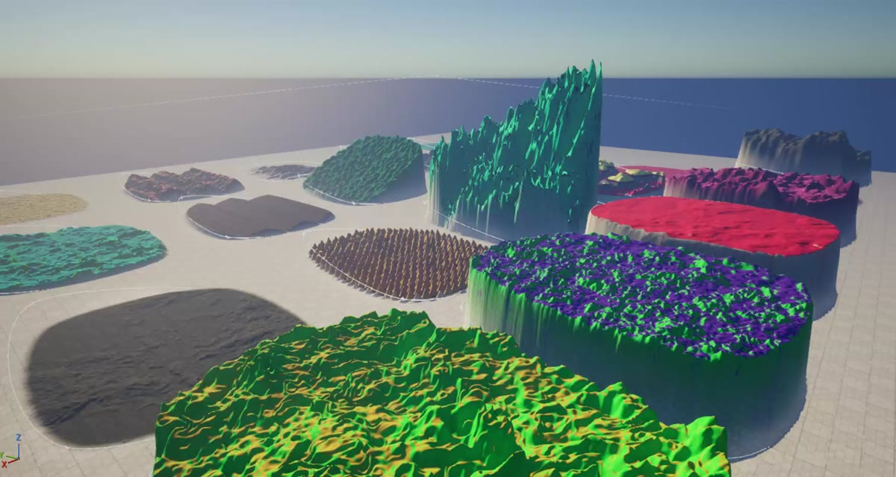
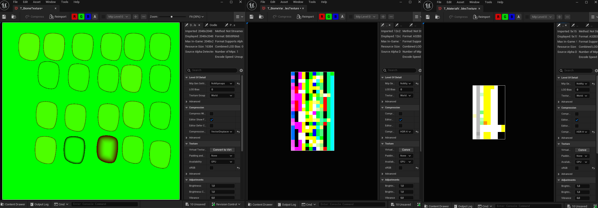
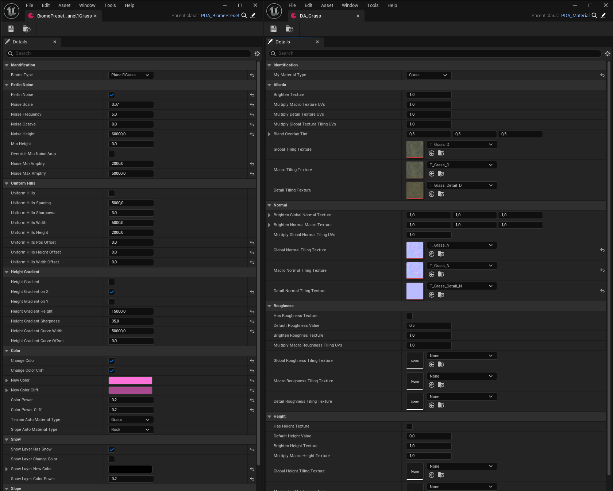

Terrain tools I built for a colourful sci-fi exploration game during my internship at Special Character: a GPU biome system driven by data assets, and a tool for painting terrain by hand.

Overview
I built these tools during my internship at Special Character, for a colourful sci-fi exploration game that the player explores both flying at high speed and on foot. The terrain was built in Unreal Engine 5 with the ShaderWorld plugin, combining my biome system and noise-based terrain generation with heightmap brushes, spline brushes and the height painting tool I made. The game is under NDA, so this page only shows what I was allowed to share.
Terrain · Biomes
I rebuilt the game's biome system, and made it much cheaper and easier to control by adding a biome texture and look-up tables. Biomes are placed in the world with splines, and I baked those splines into a texture, which the GPU reads to know which noise and material values to use where.

The noise settings of every biome, and the textures and settings of every material, are set in data assets. I baked those into look-up tables, so the GPU only ever looks values up and never has to branch, which keeps it all running at minimal cost. For the material textures I used Unreal's new bindless textures, Texture Collections, and stored each texture's ID in the look-up table. That means everything, from the shape of the hills to the snow and the textures on the slopes, is controlled by editing data assets.

Tools · Height painting
The biomes gave the large-scale control needed over the procedurally generated parts of the world.
But the game also needed smaller handmade areas, with finer control and better tooling.
Missing this control was blocking our level design, so instead of waiting for ShaderWorld's own painting feature to be released,
I built my own paint brush system.
While you paint, the heightmap texture automatically resizes and repositions itself to cover wherever you are painting.
Because the texture grows with the painted area, every area gets its own layer actor instead of sharing one huge texture.
As a bonus, these layers can be moved around in the editor, so any handmade area can easily be repositioned while iterating.